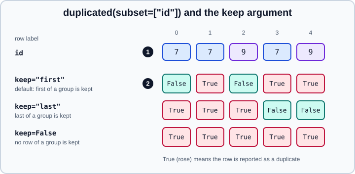

Duplicate Labels and Rows in pandas
|
This content was generated with the assistance of AI and should be verified against the official documentation before being relied on in production. |
"Duplicate" means two different things in pandas, and mixing them up causes subtle bugs. A duplicate row is a record that repeats the values of another record, usually the result of ingesting the same event twice or of a join that fans out. A duplicate label is an index or column label that appears more than once, which pandas allows but which changes how selection, alignment and reindexing behave. This page covers both: detecting and removing duplicate rows, choosing which copy survives, normalising values before comparing them, working with duplicated index and column labels, and the flag that forbids them. It targets pandas 3.1 on Python 3.13 or 3.14 (NumPy 2.5) and was checked in October 2026; every example was run with Python 3.13 and pandas 3.1.0, and the printed output is the real output.
All examples start with the usual imports and are independent of one another:
import numpy as np
import pandas as pdDuplicate rows
duplicated returns a Boolean Series that is True for the rows reported as repeats, and drop_duplicates removes them.
By default every column takes part in the comparison and the first occurrence is kept.
import pandas as pd
df = pd.DataFrame({
"id": [1, 2, 2, 3, 3, 3],
"name": ["Ann", "Bob", "Bob", "Cy", "Cy", "Cyd"],
"score": [10, 20, 20, 30, 31, 32],
})
print(df.duplicated().tolist()) # only row 2 repeats every column
print(df.duplicated().sum(), "exact duplicate rows")
print(df.drop_duplicates())Output:
[False, False, True, False, False, False]
1 exact duplicate rows
id name score
0 1 Ann 10
1 2 Bob 20
3 3 Cy 30
4 3 Cy 31
5 3 Cyd 32Two rows are duplicates only if all the compared values are equal. Missing values compare equal to each other here:
two rows of NaN in the same columns are duplicates, which differs from == where NaN is never equal to NaN.
Choosing the key with subset
Real duplicates are usually defined by a key, not by every column: the same customer with a different timestamp, the same
order line re-sent with a corrected quantity. subset restricts the comparison to some columns.
import pandas as pd
df = pd.DataFrame({
"id": [1, 2, 2, 3, 3, 3],
"name": ["Ann", "Bob", "Bob", "Cy", "Cy", "Cyd"],
"score": [10, 20, 20, 30, 31, 32],
})
print(df.duplicated(subset=["id"]).tolist())
print(df.duplicated(subset=["id"]).mean().round(3)) # share of rows that repeat a key
print(df.drop_duplicates(subset=["id", "name"])) # id and name must both match
print(df.drop_duplicates(subset="id", ignore_index=True)) # renumber the resultOutput:
[False, False, True, False, True, True]
0.5
id name score
0 1 Ann 10
1 2 Bob 20
3 3 Cy 30
5 3 Cyd 32
id name score
0 1 Ann 10
1 2 Bob 20
2 3 Cy 30The result keeps the original index labels unless ignore_index=True is given. subset accepts a single label or a
list; an unknown label raises KeyError. Before removing anything, inspect what is about to be removed: a high
duplicate share often points to a bug upstream rather than a legitimate cleanup.
Which copy to keep
The keep argument decides which member of a group of duplicates is reported as not duplicate.

-
keep="first"(default): the first row of each group is kept, the later ones are flagged. -
keep="last": the last row is kept, the earlier ones are flagged. -
keep=False: nothing is kept; every row of a repeated group is flagged. This is the choice for finding all the rows involved in a conflict, or for removing keys that are not unique at all.
import pandas as pd
df = pd.DataFrame({
"id": [1, 2, 2, 3, 3, 3],
"name": ["Ann", "Bob", "Bob", "Cy", "Cy", "Cyd"],
"score": [10, 20, 20, 30, 31, 32],
})
print(df.duplicated(subset=["id"], keep="last").tolist())
print(df.duplicated(subset=["id"], keep=False).tolist())
# Show every row that shares an id with another row
print(df[df.duplicated(subset="id", keep=False)].sort_values("id"))
# Drop the keys that are not unique at all
print(df.drop_duplicates(subset=["id", "name"], keep=False))Output:
[False, True, False, True, True, False]
[False, True, True, True, True, True]
id name score
1 2 Bob 20
2 2 Bob 20
3 3 Cy 30
4 3 Cy 31
5 3 Cyd 32
id name score
0 1 Ann 10
5 3 Cyd 32Any other value for keep raises ValueError: keep must be either "first", "last" or False.
Keeping the best row, not the first one
"First" is only meaningful if the rows are ordered. To keep the newest, the highest-scoring or the most complete record, say so explicitly. There are three common recipes with identical results here.
import pandas as pd
df = pd.DataFrame({
"id": [1, 2, 2, 3, 3, 3],
"name": ["Ann", "Bob", "Bob", "Cy", "Cy", "Cyd"],
"score": [10, 20, 20, 30, 31, 32],
})
# 1. Sort so the wanted row comes first, then keep the first
best = df.sort_values("score", ascending=False).drop_duplicates("id").sort_index()
print(best)
# 2. Select the row label of the maximum within each group
print(df.loc[df.groupby("id")["score"].idxmax()])
# 3. Aggregate: say what to do with each column
print(df.groupby("id", as_index=False).agg(name=("name", "first"), best=("score", "max")))Output:
id name score
0 1 Ann 10
1 2 Bob 20
5 3 Cyd 32
id name score
0 1 Ann 10
1 2 Bob 20
5 3 Cyd 32
id name best
0 1 Ann 10
1 2 Bob 20
2 3 Cy 32The sort-then-drop recipe is short but depends on the sort being applied to the whole frame; the idxmax recipe is
explicit; the aggregation recipe is the only one that can merge information from several rows (for example the longest
name and the latest date). See Group By: Split-Apply-Combine for the aggregation
syntax.
Normalise before comparing
Exact comparison misses duplicates that differ only in case, whitespace, accents or formatting. Build a normalised key, deduplicate on the key and keep the original text.
import pandas as pd
e = pd.DataFrame({"email": ["A@x.com ", "a@x.com", "b@x.com"]})
print(e.duplicated().tolist()) # nothing is an exact duplicate
e["key"] = e["email"].str.strip().str.lower()
print(e.duplicated("key").tolist())
print(e.drop_duplicates("key"))Output:
[False, False, False]
[False, True, False]
email key
0 A@x.com a@x.com
2 b@x.com b@x.comFor names and addresses that are written differently ("J. Smith" and "John Smith"), deduplication becomes a record
linkage problem that duplicated cannot solve; dedicated libraries use blocking and similarity scores. See
Data Cleaning and Preparation for the wider treatment.
Series and Index
Series.duplicated, Series.drop_duplicates, Series.unique, Series.nunique and Series.is_unique answer the same
questions for one column, and Index.duplicated and Index.drop_duplicates for labels.
import pandas as pd
s = pd.Series(["a", "b", "a", "c", "b"])
print(s.duplicated().tolist())
print(s.drop_duplicates().tolist())
print(s.unique())
print(s.nunique(), s.is_unique)
print(s.value_counts().to_dict()) # how many times each value occurs
ix = pd.Index(["a", "b", "a"])
print(ix.has_duplicates, ix.duplicated().tolist(), ix.drop_duplicates().tolist())Output:
[False, False, True, False, True]
['a', 'b', 'c']
<ArrowStringArray>
['a', 'b', 'c']
Length: 3, dtype: str
3 False
{'a': 2, 'b': 2, 'c': 1}
True [False, False, True] ['a', 'b']unique() returns the distinct values in order of first appearance, and for the default str dtype it returns a pandas
array rather than a NumPy array. value_counts() is the quickest way to see which values repeat and how often.
Duplicate labels
pandas accepts an index with repeated labels. That is convenient when the data genuinely has several observations per label (a measurement per sensor reading) and a source of surprises everywhere else, because a label can no longer identify one position.
import pandas as pd
ds = pd.Series([0, 1, 2], index=["a", "a", "b"])
print(ds.index.is_unique, ds.index.duplicated().tolist())
print(ds["a"]) # a Series: two matches
print(ds["b"]) # a scalar: one match
dd = pd.DataFrame({"A": [0, 1, 2, 3]}, index=["x", "y", "x", "z"])
print(dd.loc["x"]) # a DataFrame
print(dd.loc["y"]) # a Series: the row
try:
ds.reindex(["a", "b"])
except ValueError as e:
print("ValueError:", e)Output:
False [False, True, False]
a 0
a 1
dtype: int64
2
A
x 0
x 2
A 1
Name: y, dtype: int64
ValueError: cannot reindex on an axis with duplicate labelsSource: pandas user guide: Duplicate Labels.
The consequences are:
-
The return type of
locand[]depends on the data. One match returns a scalar or a row; several matches return a Series or DataFrame. Code that works on unique labels can break the day a duplicate arrives. Select with a list (ds.loc[["a"]]) to always get the same shape. -
reindexand alignment fail. Reindexing an axis that has duplicate labels raises aValueError("cannot reindex on an axis with duplicate labels"), and arithmetic between objects whose indexes are not identical needs unique labels too. -
Some methods behave differently.
groupby(level=0)happily groups the repeats;reset_indexalways works;joinandmergeproduce a row for every pairing of repeated keys (a many-to-many fan-out).
Finding and removing duplicate labels
import pandas as pd
ds = pd.Series([0, 1, 2], index=["a", "a", "b"])
print(ds[~ds.index.duplicated(keep="first")]) # keep the first row of each label
dd = pd.DataFrame({"A": [0, 1, 2, 3]}, index=["x", "y", "x", "z"])
print(dd.groupby(level=0).first()) # one row per label, first non-null value
print(dd.reset_index().drop_duplicates("index")) # same, with the label as a column
c = pd.DataFrame([[1, 2, 3]], columns=["a", "a", "b"])
print(c["a"]) # both columns named a
print(c.loc[:, ~c.columns.duplicated()]) # keep the first column of each nameOutput:
a 0
b 2
dtype: int64
A
x 0
y 1
z 3
index A
0 x 0
1 y 1
3 z 3
a a
0 1 2
a b
0 1 3Duplicate column names usually come from concat(axis=1) of frames that share column names or from files with a repeated
header. Rename them with a list (df.columns = [...]) or deduplicate them as above.
Forbidding duplicate labels
Since pandas 1.2 an object carries flags, and allows_duplicate_labels=False turns the creation of duplicate labels into
an error instead of a silent hazard. The flag is set with set_flags, which returns a new object.
import pandas as pd
s = pd.Series([1, 2], index=["a", "b"]).set_flags(allows_duplicate_labels=False)
print(s.flags)
try:
s.reindex(["a", "a"])
except Exception as e:
print(type(e).__name__, "|", " ".join(str(e).split()))
try:
pd.Series([1, 2], index=["a", "a"]).set_flags(allows_duplicate_labels=False)
except Exception as e:
print(type(e).__name__, "|", " ".join(str(e).split()))
try:
pd.concat([s, s])
except Exception as e:
print(type(e).__name__, "|", " ".join(str(e).split()))
print(pd.Series([1], index=["a"]).flags) # the default is TrueOutput:
<Flags(allows_duplicate_labels=False)>
DuplicateLabelError | Index has duplicates. positions label a [0, 1]
DuplicateLabelError | Index has duplicates. positions label a [0, 1]
DuplicateLabelError | Index has duplicates. positions label a [0, 2] b [1, 3]
<Flags(allows_duplicate_labels=True)>pandas.errors.DuplicateLabelError is a subclass of ValueError, so existing handlers still catch it. The flag
propagates through most operations (it survives concat when every input has it set), which makes it a cheap
contract at the boundary of a function: build the frame, call set_flags(allows_duplicate_labels=False), and any step
that would break the uniqueness fails at once with the offending labels listed. It applies to the index and the columns
alike. To enforce uniqueness on a column of values rather than labels, use merge(..., validate="one_to_one") for joins
or a check such as assert df["id"].is_unique.
Duplicates created by combining data
Most duplicates are not in the source; they are introduced by concat and merge.
import pandas as pd
a = pd.DataFrame({"v": [1, 2]}, index=[0, 1])
b = pd.DataFrame({"v": [3]}, index=[1])
print(pd.concat([a, b]).index.tolist()) # label 1 appears twice
print(pd.concat([a, b], ignore_index=True).index.tolist()) # renumbered
print(pd.concat([a, b], keys=["a", "b"]).index.tolist()) # labels made unique by a key level
try:
pd.concat([a, b], verify_integrity=True)
except ValueError as e:
print("ValueError:", e)
left = pd.DataFrame({"k": [1, 1], "x": [1, 2]})
right = pd.DataFrame({"k": [1, 1], "y": [3, 4]})
print(len(left.merge(right, on="k")), "rows from a many-to-many merge")
try:
left.merge(right, on="k", validate="one_to_one")
except Exception as e:
print(type(e).__name__, "|", str(e).splitlines()[0])Output:
[0, 1, 1]
[0, 1, 2]
[('a', 0), ('a', 1), ('b', 1)]
ValueError: Indexes have overlapping values: Index([1], dtype='int64')
4 rows from a many-to-many merge
MergeError | Merge keys are not unique in either left or right dataset; not a one-to-one merge.Use verify_integrity=True on concat and validate= on merge to detect the problem where it starts. A merge of
two tables with two matching rows each returns four rows; row counts that grow after a join are the classic symptom.
See Concatenation and Merge and Join.
Pitfalls
-
inplace=Trueis deprecated.drop_duplicates(inplace=True)emits aPandas4Warningin pandas 3.1 (the warning class that announces removal in pandas 4, per PDEP-17); writedf = df.drop_duplicates(). -
duplicatedcompares values, not identity. Floats that differ in the last digit are different; round or normalise first. -
Cells holding lists or dictionaries are compared by value too, but they are slow and fragile; convert them to tuples or strings first if they are part of the key.
-
Do not deduplicate before splitting data in a model workflow without thinking. Near-duplicates that straddle the training and test sets inflate scores; deduplicate on a group key before splitting. See Model Evaluation.
-
Count, then drop. Report
df.duplicated(subset=key).sum()before and the length after; silent row loss is hard to audit. -
A unique index is not a unique key. A default
RangeIndexis always unique, sodf.index.is_uniquesays nothing about duplicate records.